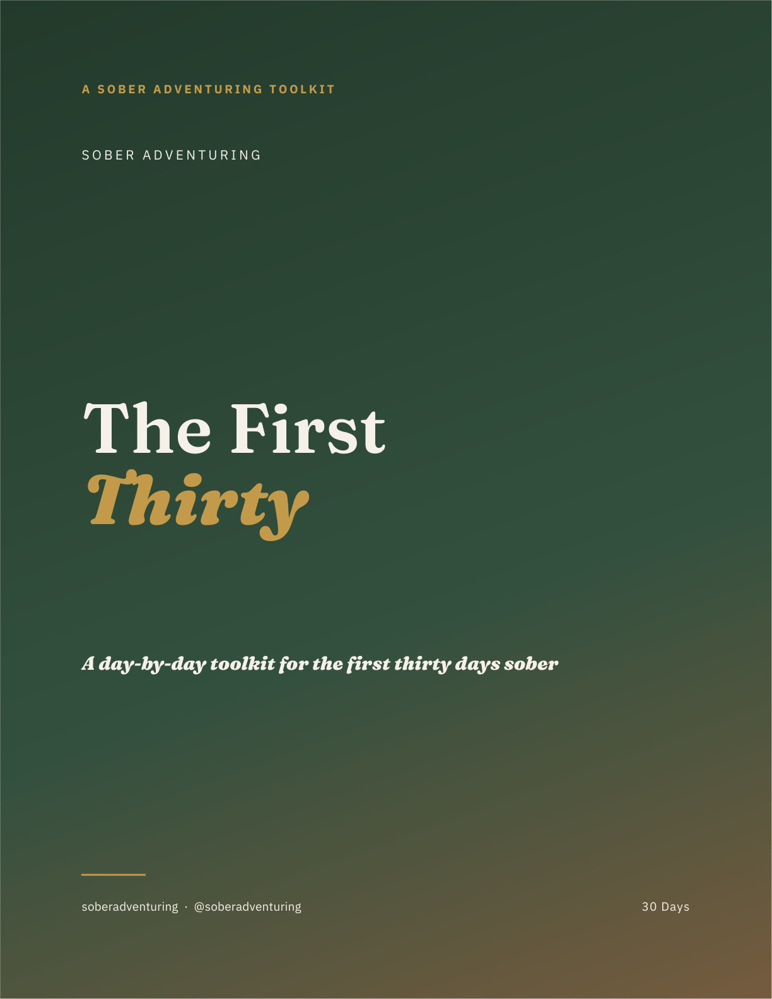

The First Thirty PDF Toolkit
Get through your first 30 days sober without a 5k mentor.
(Without labels or clinical worksheet energy.)
This is the thing you open when your brain starts bargaining, your routine feels weird, and you need one clear next step instead of a motivational quote.
The First Thirty gives you one page per day for the first month sober. Each day has a grounding idea, reflection prompts, personal commentary written by someone who's sober and one easy and measurable action that you can complete even if the day is absolute dog shit.
Inside the toolkit, you get:
- 30 day-by-day workbook pages across four phases: stabilize, rebuild, face the hard shit, reconnect.
- A screenshot-ready crisis card for the moments when reading a full PDF is too much.
- Reflection prompts that guide you when all you can think about is spiraling.
- Low Stakes 5-10 minute actions every day so you have something to work towards.
- A next-thirty plan for when the first month ends.
Included inside
First 30 Survival Kit
- Crisis card: what to do when your logic is offline.
- Gap scripts: simple language for social moments that are antsy to think about.
- Identity prompts: gentle, trauma informed questions for the multiple stages within sobriety.
- 90-day re-entry plan: a way to keep going once the first month is done.
It is built to be printed, saved to your phone, or filled in on-screen.
This is for you if:
- You are newly sober, sober-curious, or trying again.
- You're hands down, 100% willing to commit for 30 days.
- You know you're meant for so much more and you are sick of researching sobriety at 1am.
- You want something enjoyable to work with thats also direct.
- You want a private tool you can use without announcing to the whole world.
The first month can feel weird, emotional, boring, electric, lonely, and wildly clarifying. You do not have to freestyle getting sober.
Secure Stripe checkout
Get The First Thirty
$17
Buy now →Instant digital download. Yours to keep, print, or fill in on-screen.
This toolkit is not medical advice and is not a substitute for professional care. If you have been drinking heavily or daily, stopping suddenly can be medically dangerous. Talk to a doctor before or as you stop.